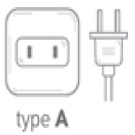
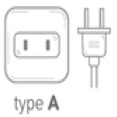
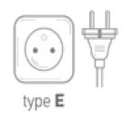
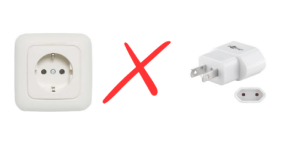
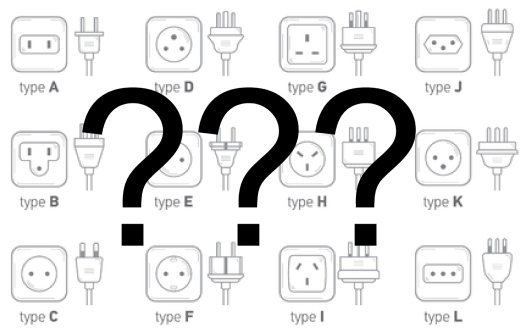

Wat is een reisstekker?
Als je opreis gaat dan is het altijd handig om te controleren of de Nederlandse stekkers in de stopcontacten kunnen.
Een reisstekker is een adapter die je in staat stelt om elektronische apparaten in het buitenland op te laden of te gebruiken.
Omdat verschillende landen vaak andere stopcontacten en spanningen hebben,
zorgt een reisstekker ervoor dat jouw apparaten ook werken met de lokale infrastructuur.
 

Type C
Zie welke landen deze type stopcontacten gebruiken.
Europa
Afrika

Type E
Zie welke landen deze type stopcontacten gebruiken.
Europa

Type F
Zie welke landen deze type stopcontacten gebruiken.
Europa
Azië

Waarom heb je een reisstekker nodig?
Tijdens het reizen wil je natuurlijk je telefoon, laptop of camera opladen. Maar niet alle landen gebruiken dezelfde stopcontacten en stekkers!
Zonder de juiste reisstekker kun je je apparaten niet gebruiken en of opladen, wat erg onhandig kan zijn.
Daarnaast is het belangrijk om te weten dat de spanning die uit de stopcontacten komen in andere landen kan verschillen.
Sommige reisstekkers bieden ook de mogelijkheid om dit aan te passen, zodat je apparaten niet beschadigd raken.
Type A
Zie welke landen deze type stopcontacten gebruiken.
Noord-Amerika

Type B
Zie welke landen deze type stopcontacten gebruiken.
Noord-Amerika

Type I
Zie welke landen deze type stopcontacten gebruiken.
Oceanië

Welke reisstekker heb ik dan nodig?
De juiste reisstekker hangt af van je bestemming. In Europa heb je vaak een type C, E en F stekker nodig,
terwijl in de VS een type A of B stekker gebruikelijk is. Het is dus handig om te controleren welke stopcontacten en spanningen
gebruikt worden in het land waar je naartoe gaat. Ook zijn er universele reisstekkers die meerdere types stekkers ondersteunen,
wat ze bijzonder praktisch maakt voor avontuurlijke reizigers.

Waar kan ik een reisstekker kopen?
Reisstekkers zijn op veel plaatsen verkrijgbaar. Zoals op de webshop van de ANWB waar je een ruime keuze aan reisstekkers hebt.
Je kunt ze ook kopen in elektronicawinkels, warenhuizen en gespecialiseerde reiswinkels. Ook online zijn er talloze opties beschikbaar.
Het is slim om vooraf een reisstekker aan te schaffen, zodat je goed voorbereid op reis kunt gaan en niet voor verrassingen komt te staan.
Ga naar ANWB site